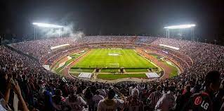

Apresentação
O time do São Paulo foi fundado em 25 de janeiro de 1930, o tricolor paulista é um dos clubes mais tradicionais do futebol brasileiro. Dono de vários títulos nacionais e internacionais, o São Paulo tem uma das maiores torcidas do Brasil e também é conhecido por revelar grandes jogadores, como por exemplo: KaKá, Denilson, Rogério Ceni, entre outros.
Estádio
Cicero Pompeu de Toledo, mais conhecido como estádio do Morumbi. O Morumbi é o terceiro maior estádio do Brasil, sendo também o maior estádio do estado de São Paulo e o maior estádio particular do País. Ele foi inaugurado em 2 de outubro de 1960, na ocasião o time do São Paulo venceu o Sporting de Portugal por 1 a 0. O público recorde do Morumbi é de 146082 pessoas numa partida realizada entre Corinthians e Ponte Preta em 9 de outubro de 1977, atualmente a capacidade é de 66795 pessoas. O estádio do Morumbi também recebe shows musicais e outros eventos, já passaram pelo Morumbi vários artistas e bandas mundialmente renomadas, por exemplo: Michael Jackson, Madonna, nirvana.
Títulos
- 3 Mundiais Interclubes
- 3 Taças Libertadores da América
- 1 Supercopa da Libertadores
- 2 Recopas Sul-Americana
- 1 Copa Comebol
- 6 Campeonatos Brasileiro
- 1 Torneio Rio-São paulo
- 22 Campeonatos Paulista